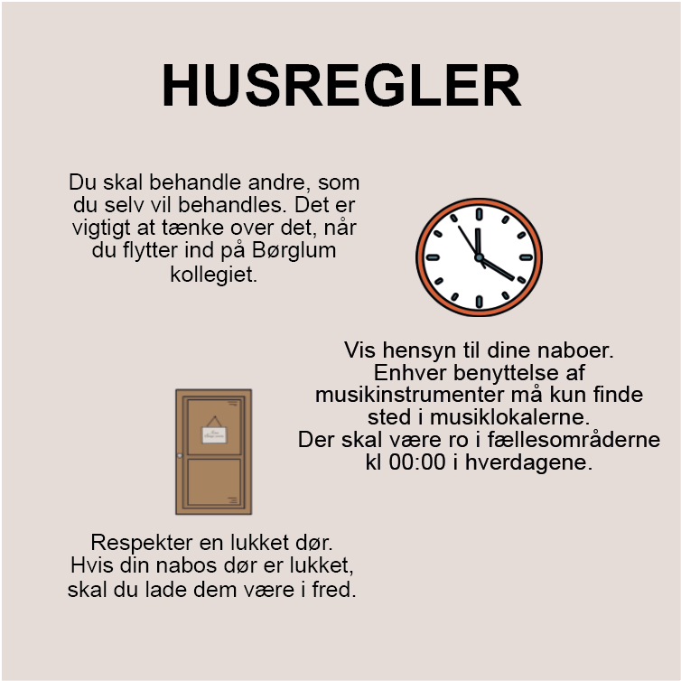
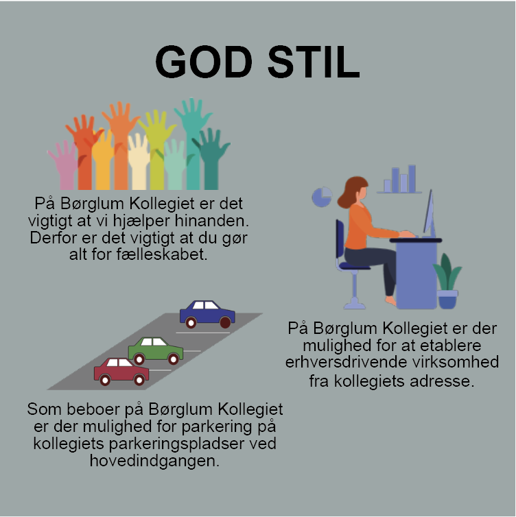
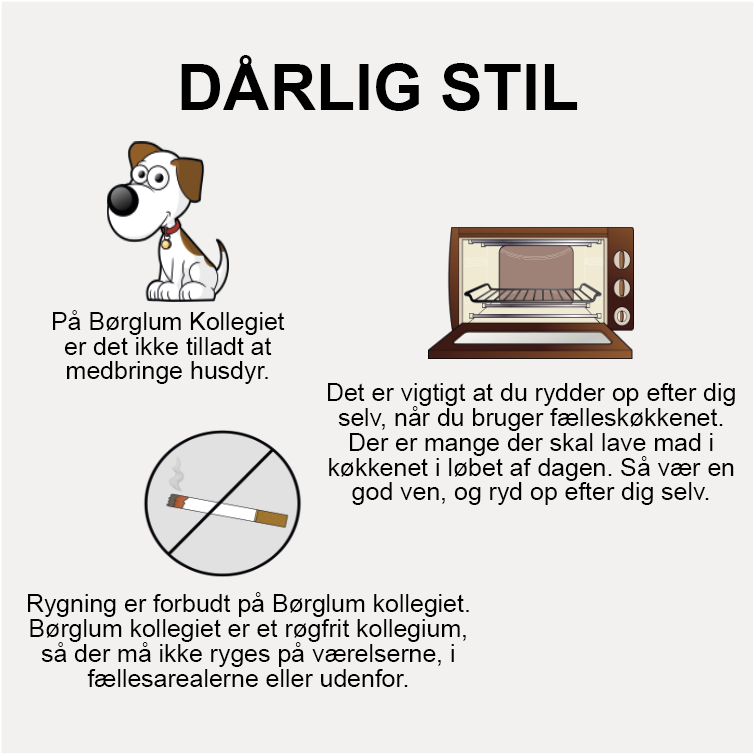

Information
Sådan bliver du en del af fællesskabet på Børglum Kollegiet
Socialt engagement og samvær er en essentiel del af kollegielivet. Som beboer her på Børglum kollegiet håber vi alle, at du har lyst til at bidrage til fællesskabet og et godt socialt miljø. På kollegiet vil du indgå i forskellige former for fællesskaber med alle dem, som du deler din hverdag med. Derfor ser vi gerne, at du har lyst til at tage aktiv del i kollegiefællesskabet, hvilket du blandt andet kan gøre ved at have interesse i at dele din hverdag med andre studerende. Samt bidrage aktivt til udvikling af det sociale liv på kollegiet – både i hverdagen og i forbindelse med større arrangementer.


